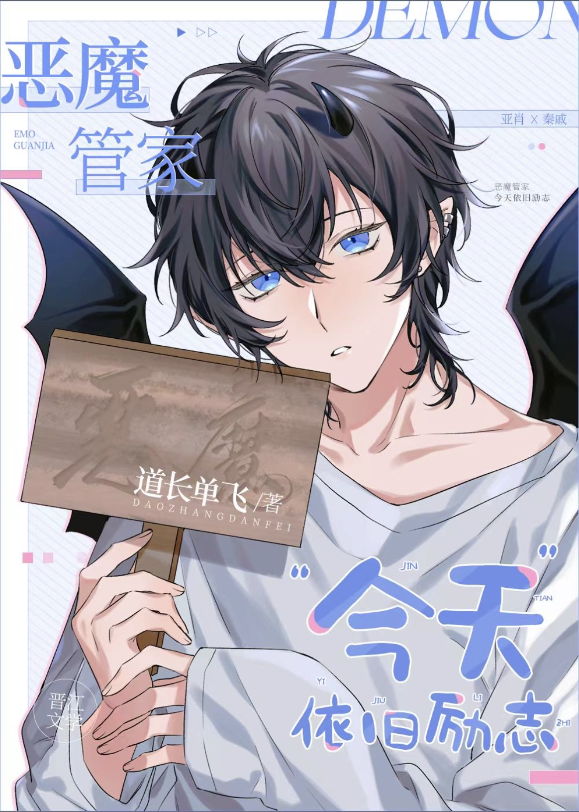

Ya Xiao era un pequeño demonio muy lamentable a quien su madre le arrancó las alas y la cola de murciélago justo después de nacer.
Una vez que un demonio pierde sus alas y cola, se convierte en el demonio más bajo del grupo.
Afortunadamente, Ya Xiao creció con un sistema de motivación.
Con la ayuda de su tío System, Ya Xiao adoraba el mal por naturaleza, pero su carácter era positivo, alegre, saludable y lleno de ideales y creencias.
Cuatrocientos años después, Ya Xiao, con gran motivación y gracias a sus propios esfuerzos, recuperó su cola. Justo cuando estaba a punto de que le crecieran las alas,
——él transmigró.
Ya Xiao: ……
Sistema: ¡Cachorro, no llores! ¡Papá te llevará de vuelta!
＊＊＊＊
Para que el cachorro regresara, el sistema, tras investigar y analizar, descubrió que se trataba de una novela. En ella, había un villano con una sola mano en el cielo y siempre en contra del grupo del protagonista. El sistema lloró de alegría.
"Cachorro, acércate al villano y absorbe el valor demoníaco de él".
Ya Xiao asintió: "¡Está bien!"
Después de algunas manipulaciones, Ya Xiao asumió con éxito su puesto como mayordomo del villano.
Justo cuando estaba de guardia y listo para acercarse al villano, llegó a tiempo de ver al villano, ya ennegrecido, estrangular el cuello del protagonista. Su mirada era feroz y fría, y parecía sanguinario y cruel.
Ya Xiao: ……!!!
¡Es tan rudo! ¡Me encanta!
El alma de Ya Xiao, que adoraba al poderoso, despertó. No pudo evitar que su cola se moviera de un lado a otro en sus pantalones, y su corazón se conmovió.
Sistema: ……???
＊＊＊＊
El nuevo mayordomo era guapo, amable, educado y amable.
Ya sea que se tratara de programar o lidiar con diversas tareas, siempre las organizaba perfectamente.
Qin Qi escuchó a sus subordinados decir que al mayordomo le agradaba.
Se tiró de la comisura de los labios y apagó el cigarrillo que tenía en la mano.
¿Te gusta? Más te vale un perro.
Una existencia tan bella y suave como la de un gato como el mayordomo debe ser mimada con oro y plata.
Sólo traería desgracia y miedo a la otra parte.
En un raro ataque de conciencia, Qin Qi lo llevó deliberadamente al campo de batalla una vez para dejarle claro a la otra parte que ni siquiera eran del mismo mundo.
Las extremidades cercenadas de los insectos se amontonaban en montañas. La sangre verde y maloliente, mezclada con la sangre humana, era repugnante. Enloquecía cada vez más a la gente.
"¿Ver?"
Qin Qi sacó su espada plateada, indicándole al otro que mirara a sus compatriotas que ya se habían vuelto locos por la contaminación mental:
"Mientras la madre insecto no muera, los insectos nunca morirán y yo me convertiré en un completo y loco".
"Pero la madre insecto…" resopló Qin Qi, "Nadie puede luchar contra ese tipo de cosas".
Ya Xiao: ……
Tembló mientras sacaba algo parecido a una piedra preciosa de detrás de él.
"¿Es… es esto?"
Qin Qi: ……
Ya Xiao: Preguntas frecuentes
¡No sabía que esta cosa brillante era la madre insecto!